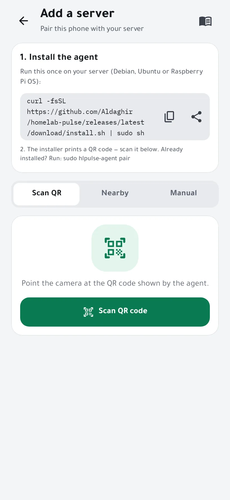
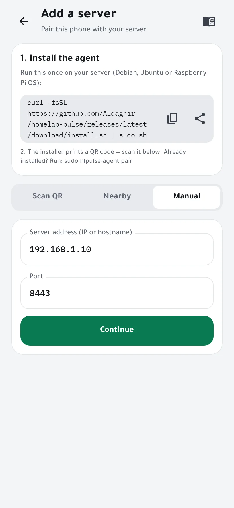
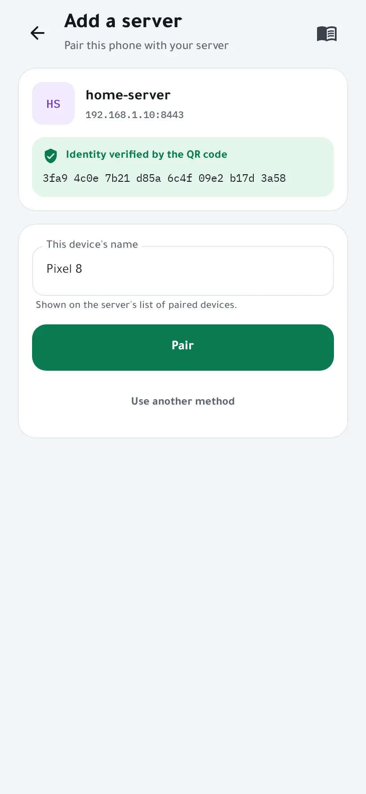
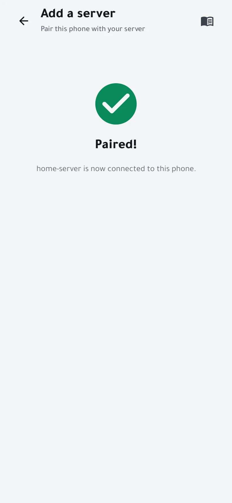

Install the agent and pair your phone
Homelab Pulse reads your server through a small agent that runs on it. You install it once with one command, then pair your phone by scanning a QR code. It takes about five minutes.
You need
- A server running Debian, Ubuntu or Raspberry Pi OS, 64-bit (amd64 or arm64), with systemd.
- An account that can use
sudoon it. - Your phone on the same network as the server for the first pairing.
-
Copy the install command
In the app, open Add a server. The first card holds the install command: copy it, or share it to the computer you use to reach your server.
curl -fsSL https://github.com/Aldaghir/homelab-pulse/releases/latest/download/install.sh | sudo sh
Rather read a script before running it? Download
install.shfrom the latest release, read it, then runsudo sh install.sh. The installer checks the agent it downloads against the release's checksums.
-
Run it on your server
Paste the command into a terminal on the server. It installs the agent as the systemd service
hlpulse-agent, under its own userhlpulse, and finishes by printing a QR code, a pairing code and the server's fingerprint. The code works once and expires after 10 minutes.Code expired, or the agent was already installed? Run
sudo hlpulse-agent pairfor a new one. -
Scan the QR code
Tap Scan QR code and point the camera at the terminal.
Can't scan? Nearby lists the agents announcing themselves on your Wi-Fi, and Manual takes the server's IP address or name, on port 8443.

Manual: the server's address and port 8443. -
Check it's your server, then pair
The app shows the server's name, address and fingerprint. A scanned QR code proves the server's identity by itself; when you add a server by hand, compare the fingerprint with the one the agent printed.
Type the pairing code if the app asks for it, give this phone a name, and tap Pair.

-
Done
The dashboard opens with your server's live state. Next, reach it away from home or get alerts on Telegram.

If something goes wrong
- The app can't reach the server
- The phone and the server must be on the same network, and the server must accept TCP port 8443 from it. If it runs a firewall, allow that port from your local network.
- The fingerprint doesn't match
- Don't pair: something else is answering at that address. Run
sudo hlpulse-agent pairon the server and compare again. - Is the agent running?
systemctl status hlpulse-agentshows its state, andjournalctl -u hlpulse-agent -eits latest messages.- Removing the agent
- Run the install command with
--uninstalladded:curl -fsSL …/install.sh | sudo sh -s -- --uninstall. It stops and removes the agent. Its data in/var/lib/hlpulseand settings in/etc/hlpulsestay until you delete them.